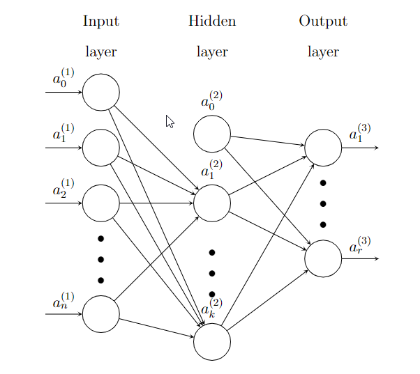
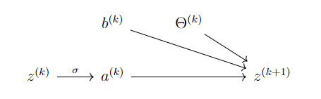

Neural network: Back propagation
6.1. Neural network: Back propagation#
To train a MLP model, we still use gradient descent. Therefore it is very important to know how to compute the gradient. Actually the idea is the same as logistic regreesion. The only issue is that now the model is more complicated. The gradient computation is summrized as an algorithm called back propagation. It is described as follows.
Here is an example of a Neural network with one hidden layer.

\(\Theta\) is the coefficients of the whole Neural network.
\(a^{(1)}=\hat{\textbf{x}}\) is the input. \(a_0^{(1)}\) is added. This is an \((n+1)\)-dimension column vector.
\(\Theta^{(1)}\) is the coefficient matrix from the input layer to the hidden layer, of size \(k\times(n+1)\).
\(z^{(2)}=\Theta^{(1)}a^{(1)}\).
\(a^{(2)}=\sigma(z^{(2)})\), and then add \(a^{(2)}_0\). This is an \((k+1)\)-dimension column vector.
\(\Theta^{(2)}\) is the coefficient matrix from the hidden layer to the output layer, of size \(r\times(k+1)\).
\(z^{(3)}=\Theta^{(2)}a^{(2)}\).
\(a^{(3)}=\sigma(z^{(3)})\). Since this is the output layer, \(a^{(3)}_0\) won’t be added.
The dependency is as follows:
\(J\) depends on \(z^{(3)}\) and \(a^{(3)}\).
\(z^{(3)}\) and \(a^{(3)}\) depends on \(\Theta^{(2)}\) and \(a^{(2)}\).
\(z^{(2)}\) and \(a^{(2)}\) depends on \(\Theta^{(1)}\) and \(a^{(1)}\).
\(J\) depends on \(\Theta^{(1)}\), \(\Theta^{(2)}\) and \(a^{(1)}\).
Each layer is represented by the following diagram:

The diagram says:
Assume \(r,j\geq1\). Then
We set
\(\delta^k_j=\diffp{J}{z^{(k)}_j}\), \(\delta^k=\left[\delta^k_1,\delta_2^k,\ldots\right]^T\).
\(\mathbf{z}^k=\left[z^{(k)}_1,z^{(k)}_2,\ldots\right]^T\), \(\mathbf{a}^k=\left[a^{(k)}_1,a^{(k)}_2,\ldots\right]^T\), \(\hat{\mathbf{a}}^k=\left[a^{(k)}_0,a^{(k)}_1,\ldots\right]^T\).
\(\Theta^{k}=\left[\Theta^{(k)}_{ij}\right]\).
Then we have the following formula. Note that there are ``\(z_0\)’’ terms.
Extend \(\hat{\Theta}=\left[b^{(k)},\Theta^{(k)}\right]\), and \(\partial^k J=\left[\diffp{J}{\hat{\Theta}^{(k)}_{ij}}\right]\). Then $\( \partial^k J=\left[\delta^{k+1}, \delta^{k+1}(\mathbf{a}^k)^T\right]. \)$ Then the algorithm is as follows.
Starting from \(x\), \(y\) and some random \(\Theta\).
Forward computation: compute \(z^{(k)}\) and \(a^{(k)}\). The last \(a^{(n)}\) is \(h\).
Compute \(\delta^n=\nabla J\circ\sigma'(z^{(n)})\). In the case of \(J=\frac12||{h-y}||^2\), \(\nabla J=(a^{(n)}-y)\), and then \(\delta^n=(a^{(n)}-y)\circ\sigma'(z^{(n)})\).
Backwards: \(\delta^k=\left[(\Theta^k)^T\delta^{k+1}\right]\circ \sigma'(\mathbf{z}^k)\), and \(\partial^k J=\left[\delta^{k+1}, \delta^{k+1}(\mathbf{a}^k)^T\right]\) .
Example 6.1
Consider there are 3 layers: input, hidden and output. There are \(m+1\) nodes in the input layer, \(n+1\) nodes in the hidden layer and \(k\) in the output layer. Therefore
\(a^{(1)}\) and \(\delta^1\) are \(m\)-dim column vectors.
\(z^{(2)}\), \(a^{(2)}\) and \(\delta^2\) are \(n\)-dim column vectors.
\(z^{(3)}\), \(a^{(3)}\) and \(\delta^3\) are \(k\)-dim column vectors.
\(\hat{\Theta}^1\) is \(n\times(m+1)\), \(\hat{\Theta}^2\) is \(k\times(n+1)\).
\(z^{(2)}=b^{(1)}+\Theta^{(1)}a^{(1)}=\hat{\Theta}^{(1)}\hat{a}^{(1)}\), \(z^{(3)}=b^{(2)}+\Theta^{(2)}a^{(2)}=\hat{\Theta}^{(2)}\hat{a}^{(2)}\).
\(\delta^3=\nabla_aJ\circ\sigma'(z^{(3)})\). This is a \(k\)-dim column vector.
\(\partial^2 J=\left[\delta^3,\delta^3(a^{(2)})^T\right]\).
\(\delta^2=\left[(\Theta^2)^T\delta^3\right]\circ \sigma'(z^{(2)})\), where \((\hat{\Theta^2})^T\delta^3=(\hat{\Theta^2})^T\delta^3\) and then remove the first row.
\(\partial^1 J=\left[\delta^2,\delta^2(a^{(1)})^T\right]\).
When \(J=-\frac1m\sum y\ln a+(1-y)\ln(1-a)\), \(\delta^3=\frac1m(\sum a^{(3)}-\sum y)\).